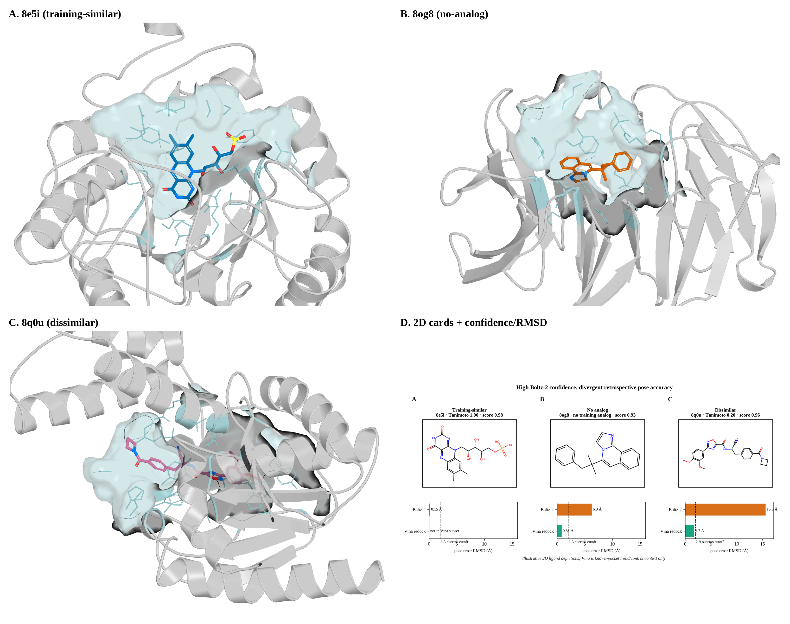
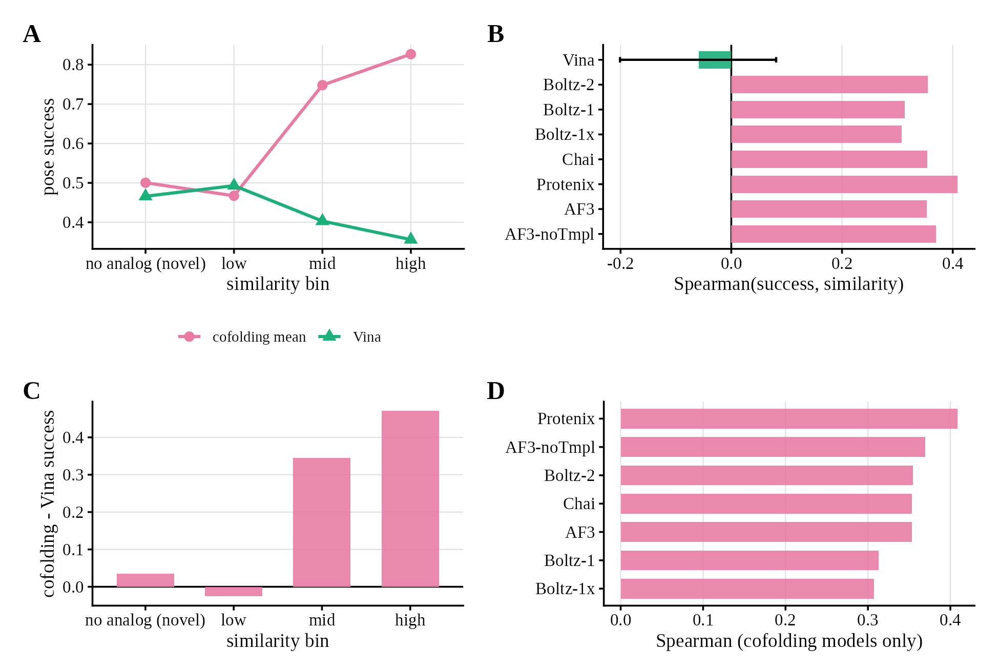
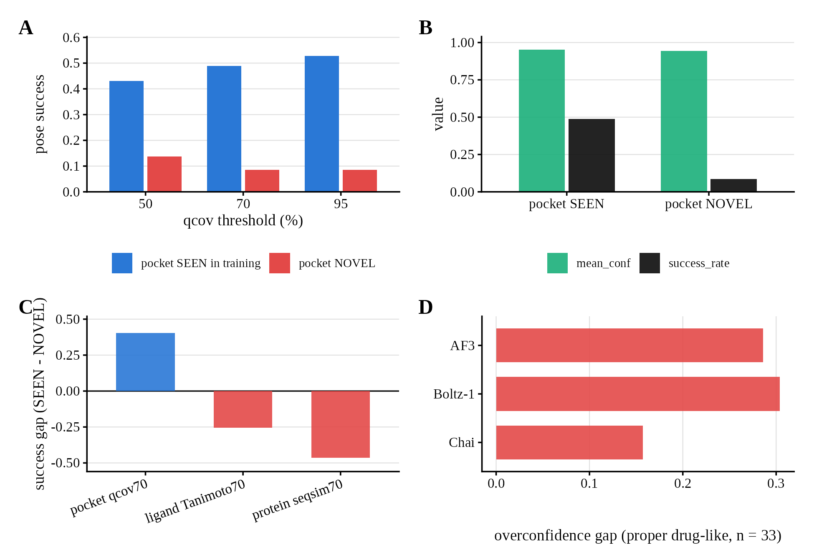
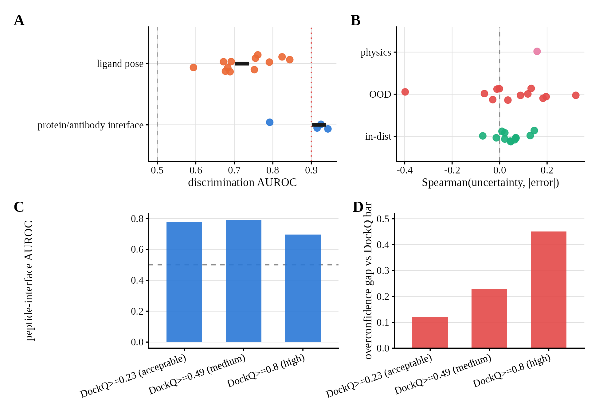
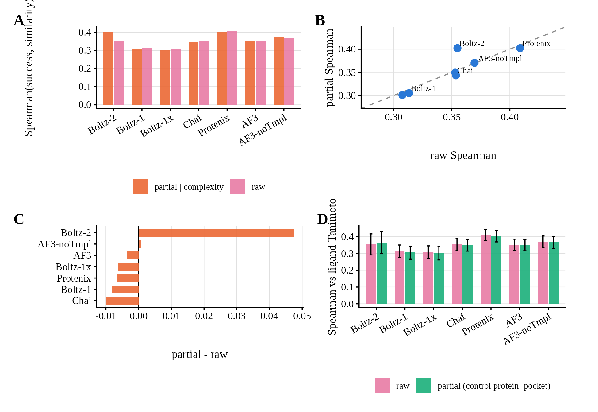
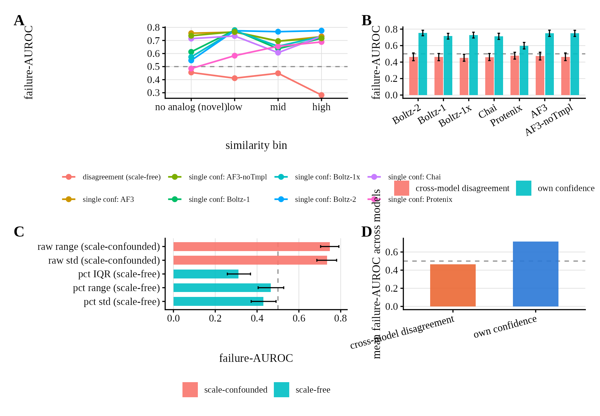
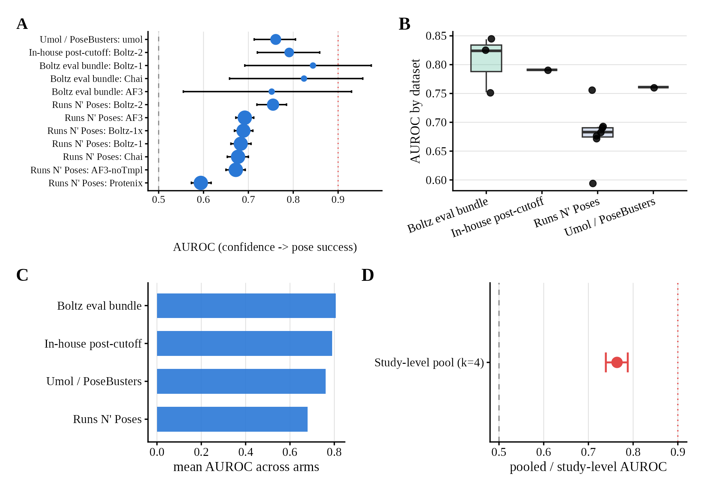

Lead panels show the deposited complex moving: pose accuracy, known-pocket redocking, pocket novelty, and task type. Spearman / AUROC forests sit in a labeled statistical-controls stack. Captions are object → process → metric. FS6/FS7 omitted until those captions are standalone.
Object gallery
F1 · F5 · F8 A–C · F13
F1object · pose / pocket
Concrete case study (four panels)

Deposited pockets and 2D ligands for 8e5i, 8og8, and 8q0u. Boltz-2 keeps similar high ranking scores (0.98 / 0.93 / 0.96) while ligand RMSD versus the deposited pose splits 0.15 Å versus 6.3 Å / 15.6 Å. Known-pocket Vina redocking stays within 2 Å on the two hard examples (0.8 Å, 1.7 Å). Illustrative exhibit; aggregate inference is the Runs N' Poses analyses.
F5object · pocket control
Physics-docking double dissociation

Known-pocket Vina redocking versus learned cofolding on the same ligands. Vina success is flat across training-similarity; cofolding success rises with training-similar chemistry (Spearman +0.31 to +0.41 versus Vina ≈ 0, CI includes 0). Known-pocket redocking is an easier task than blind cofolding — trend control, not a method ranking.
F8object · pocket novelty
Post-cutoff pocket occupancy

In-house Boltz-2 on 182 well-superposed post-cutoff systems. Pocket-novel complexes succeed less often than pocket-seen (0.09 vs 0.49 at qcov 70%) while mean confidence stays about 0.95. Ligand-Tanimoto is not the operative axis on this slice. Panel D is a separate Boltz-eval slice (n = 33) and is not covered by n = 182.
F13object · task type
Confidence reliability is task-dependent

Task type, not a single reliability number. Ligand-pose RMSD, peptide-interface DockQ, and affinity error are different physical readouts. Interface ipTM tracks DockQ; ligand-pose confidence does not at the same bar; affinity uncertainty barely tracks error. Ligand-pose unreliability is task-specific.
Statistical controls
F6 · F9 · F11 — metrics only, no poses plotted
These panels move Spearman or AUROC. They do not show a complex, a pocket, or a task switch. They are evidence, not the product.
F6control · Spearman
Ligand-complexity partial control

Metric-only. Raw versus partial Spearman(success, similarity | ligand complexity) for seven confidence-bearing models. Partial ≈ raw except Boltz-2, which strengthens (0.355 → 0.402). Ligand-Tanimoto Spearman, raw versus protein+pocket partial, with CIs. No poses plotted.
F9control · AUROC
Cross-model disagreement

Metric-only. Failure-AUROC by ligand-similarity bin for scale-free cross-model disagreement versus own confidence. Consensus does not flag pose failure. No poses plotted.
F11control · AUROC forest
Discrimination across published benchmarks

Metric-only. AUROC (confidence → pose success) across twelve model-arms. Every arm falls in 0.59–0.84; pooled AUROC ≈ 0.76. No poses plotted. Do not read this forest as a pocket figure.